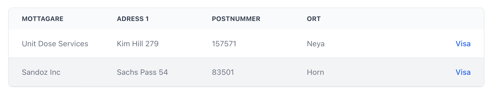

class: center, middle # Cypress --- # What is it? * Browser testing * End-to-end * Component * Framework agnostic --- # Details * Tests run in the browser * Tests are written in JavaScript/TypeScript * Cypress application * HTML snapshots --- # Basic Example ```typescript describe('My First Test', () => { it('Gets, types and asserts', () => { cy.visit('https://example.cypress.io') cy.contains('type').click() cy.url().should('include', '/commands/actions') cy.get('.action-email').type('fake@email.com') cy.get('.action-email').should('have.value', 'fake@email.com') }) }) ``` <img src="autocomplete.png" width="80%" height="80%"> --- # Cypress vs Capybara ## Pros * Access to frontend application * Can mock/stub requests * Can stub the time * Direct access to the browser ## Cons * Cumbersome to create data in the backend * Inconvenient * Some quirks around the command queue * Some weird choices of the API --- # Conventions * Most tests use stubbed requests * A few tests that perform real requests * Cleanup before instead of after * Prefer to use test ID for selectors --- # Conventions ## Test ID  --- # Conventions ## Test ID ```html <table data-test="addresses"> <tbody> <tr> <td data-test="addressee">Unit Dose Services</td> <td data-test="addr1">Kim Hill 279</td> <td data-test="zip_code">157571</td> <td data-test="city">Neya</td> <td data-test="action"> <a href="/addresses/2">Visa</a> </td> </tr> <tr> <td data-test="addressee">Sandoz Inc</td> <td data-test="addr1">Sachs Pass 54</td> <td data-test="zip_code">83501</td> <td data-test="city">Hoorn</td> <td data-test="action"> <a href="/addresses/3">Visa</a> </td> </tr> </tbody> </table> ``` --- # Setting up Data * API calls to the backend * Execute shell commands (Node bundled) * Fixtures --- # Factories ## Data for Stubbed Requests Plain JavaScript function: ```typescript interface User { name: string email: string } function generateUser(attributes: Partial<User>): User { return { name: "Katrine Winterflood", email: "katrine.winterflood@example.com", ...attributes } } ``` --- # Factories ## Data for Real Requests ### `cypress-on-rails` Provides API endpoints and utility functions for: * Invoking FactoryBot factories * Cleaning up the database * A couple of more things #### Example ```typescript cy.appFactories([['create', 'loading_dock', {name: 'Punkt 1'}]]) ``` --- # Commands * Tests create a command queue * Commands are executed the end of the tests * Custom commands and queries ### Example ```typescript cy.getByTestId('addressee').should('contain', 'Sandoz Inc') cy.findByTestId('city').should('contain', 'Hoorn') ``` --- class: center, middle # Demo